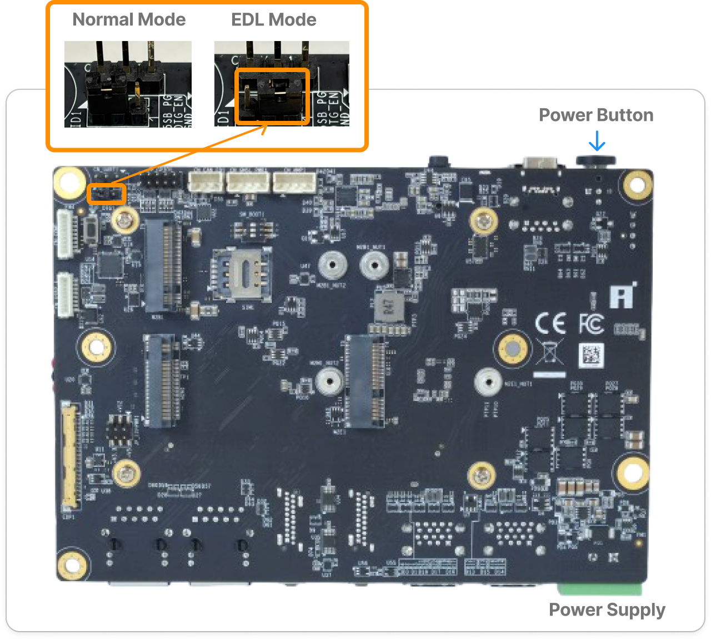
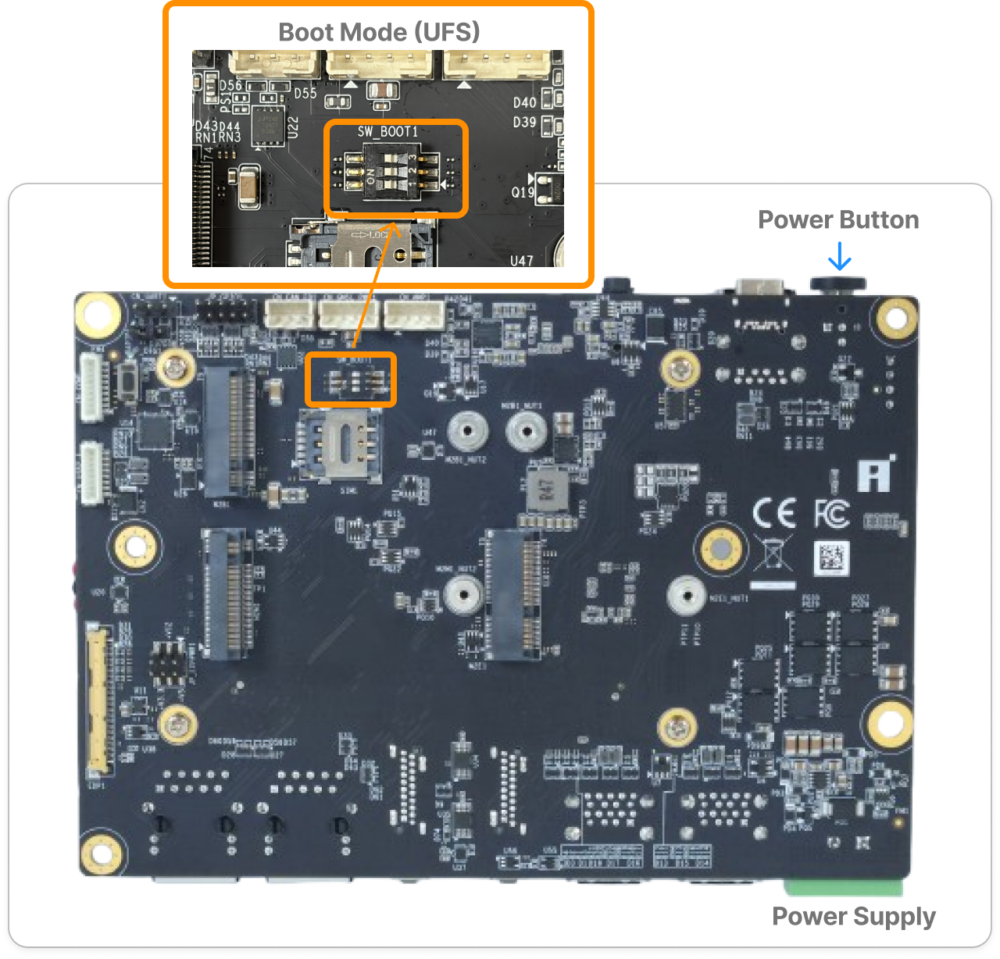
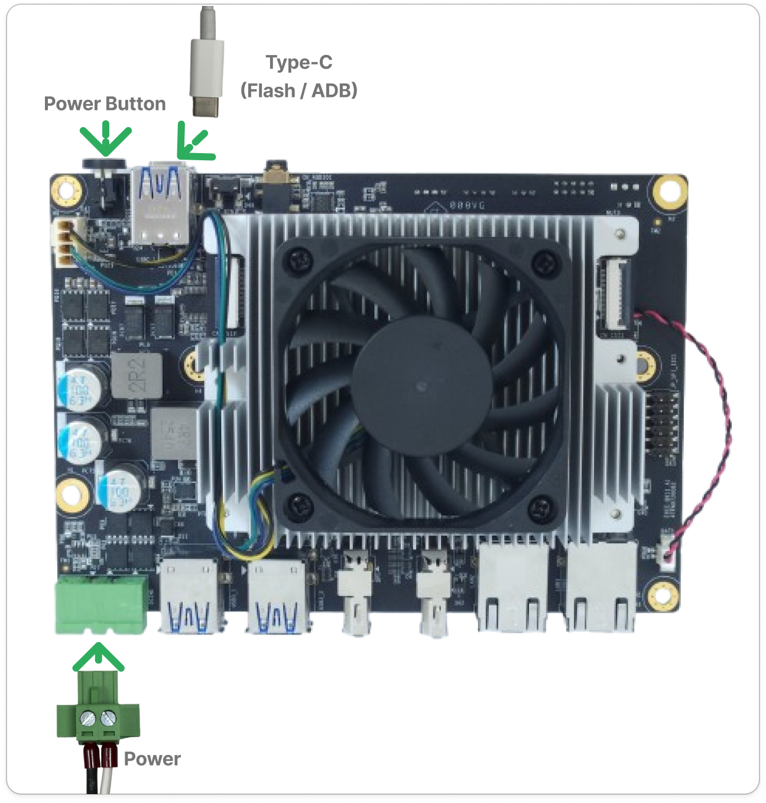
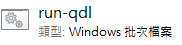
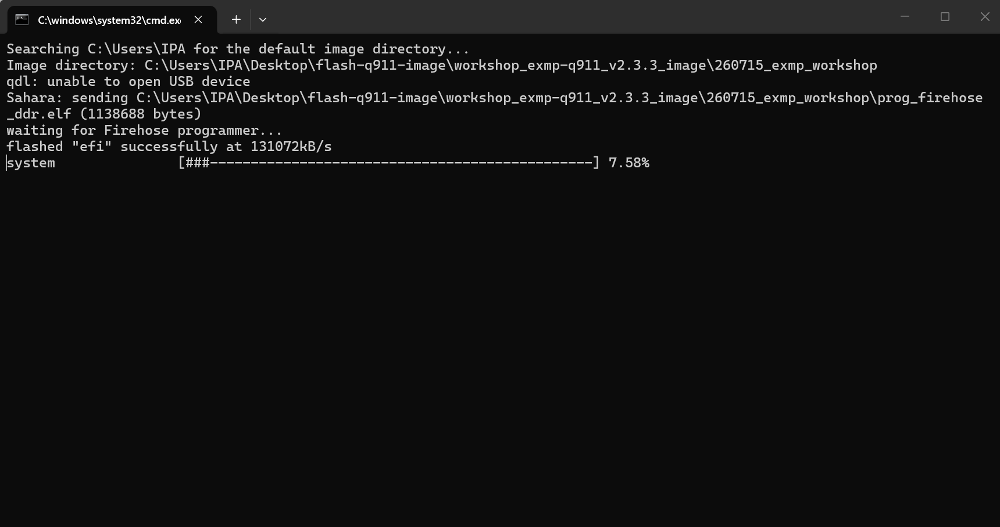
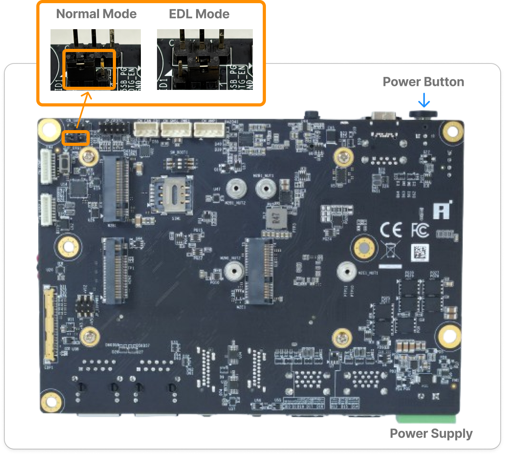

Windows
燒錄說明書。
Windows
Flashing Guide.
本頁示範用 run-qdl.bat 將映像燒錄到 Q911 平台。開始前請先完成「預先安裝」中的 QSC、QUD。
This page shows how to flash the image to the Q911 platform with run-qdl.bat. Finish QSC and QUD in "Pre-install" first.
此頁僅在手動燒錄時才需要。若使用 Agent Skill，燒錄會由 Agent Skill 自動執行，請直接在 Agent Skill 內操作，不用照本頁步驟。 This page is only needed for manual flashing. If you use the Agent Skill, flashing runs inside the Agent Skill — just work there and skip the steps on this page.
燒錄異常排除：1. 拔掉電源線 2. 重新上電 3. 再次燒錄。若需要協助，請洽現場助教。 Flashing troubleshooting: 1. Unplug the power cable. 2. Replug to power cycle. 3. Retry flashing. You can also ask our TAs for help.
準備電路板Prepare the Board for Flashing
請確保裝置已拔掉電源，才能執行以下步驟喔! You must unplug the power supply before proceeding with the following steps!
請將板子背面的跳帽調整到 EDL mode。
Set the jumper on the bottom side of the board to EDL mode.

同時也請確認所有的啟動模式撥碼開關（DIP switches）皆已調至 ON（如下圖所示），系統才能從 UFS 啟動。
Please also confirm that all boot mode DIP switches are set to ON, as shown below, so the system can boot from UFS.

請將 USB Type-C 傳輸線連接到目標裝置上標示為 Flash / ADB 的連接埠。並接上電源，接完後請開機。
Connect the USB Type-C cable to the port labeled Flash / ADB on the target device. Plug in the power, and then turn it on.

執行下載包中的燒錄程式Run the Flashing Installer in the Download Package
在我們提供下載的工作坊套件資料夾裡，找到並雙擊執行以下燒錄程式： Inside the workshop package folder we provide for download, find and double-click the flashing installer below:
韌體 image 資料夾（名稱類似 *workshop_exmp-q911*_image）必須直接放在 C:\iq_workshop 底下，跟工作坊套件資料夾同一層——燒錄程式會自動在 C:\iq_workshop 下搜尋。如果同一台電腦上有多個符合的韌體資料夾，自動搜尋可能會找錯，這時要改成明確指定路徑：run-qdl.bat --image "<韌體資料夾完整路徑>"。
The firmware image directory (named like *workshop_exmp-q911*_image) must sit directly under C:\iq_workshop, alongside the workshop package folder — the installer auto-searches under C:\iq_workshop. If more than one matching firmware directory exists on the same PC, the auto-search may pick the wrong one; pass it explicitly instead: run-qdl.bat --image "<full path to the image folder>".
C:\iq_workshop\hands_on_workshop_package_v2.0.0\flash_image\windows-x64\run-qdl.bat

程式會開啟一個終端機視窗，開始燒錄並顯示進度。 A terminal window opens and shows flashing progress.

畫面會持續跑出一連串 flashed "..." successfully 訊息，進度條跑到接近 100% 即完成。
A stream of flashed "..." successfully lines will keep appearing until the progress bar reaches 100%.
燒錄完成畫面Flashing complete screen
... flashed "toolsfv" successfully flashed "PrimaryGPT" successfully flashed "BackupGPT" successfully 65 patches applied partition 1 is now bootable ==================================================== Flash completed. Exit code: 0 Check the output above for "N patches applied" and "partition N is now bootable" to confirm real success (exit code 0 alone is not enough). ==================================================== Press any key to continue . . .
Exit code: 0 不代表一定成功，請務必確認畫面最後同時出現 N patches applied 和 partition N is now bootable 兩行字樣（N 是數字，會依燒錄檔不同而改變），才算真的燒錄成功。確認後按下任意鍵即可關閉視窗。
Exit code: 0 alone isn't enough — confirm the screen also ends with both N patches applied and partition N is now bootable (N is a number that varies depending on the image) before treating the flash as successful. Once confirmed, press any key to close the window.
拔掉電源後切回 Normal mode，並開機Power Off, Switch to Normal Mode, and Boot
請確保裝置已拔掉電源，才能執行以下步驟喔! You must unplug the power supply before proceeding with the following steps!
進行下方的步驟（切回 Normal mode 並開機）。 Proceed with the steps below (switch back to Normal mode and boot).
燒錄成功後，請將裝置斷電，並把板子背面的跳帽調回 Normal mode。
After the flashing process is complete, power off the device and set the jumper on the bottom side of the board to Normal mode.

請一併確認所有的啟動模式 DIP 指撥開關都已經切換到 ON，以確保系統從 UFS 啟動。
Please also confirm that all boot mode DIP switches are set to ON, as shown below, so the system boots from UFS.
.png)
接上螢幕、滑鼠，啟動進入系統Boot into the System
切換回 Normal 模式後，接上螢幕、滑鼠以及電源即可開啟裝置電源並啟動進入系統。 After switching back to Normal mode, connect the monitor, mouse, and power supply to power on the device and boot into the system.
點擊左上方紅色 ICON，如果出現版本號表示燒錄成功（太棒了🥳）。 Click the red icon in the top-left corner — if the version number and a successful flashing message appear, the system has booted correctly. 🥳